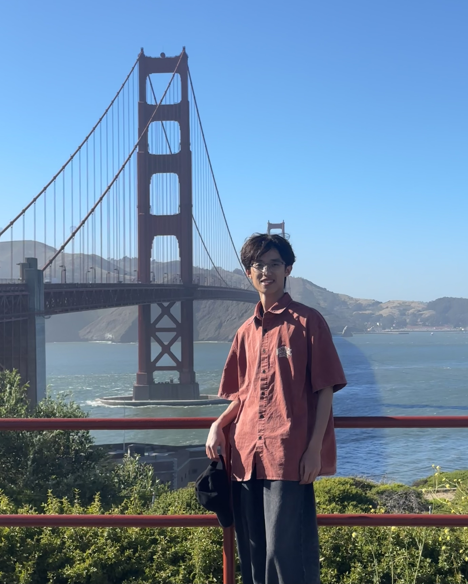

Yu Yan
B.Eng. Candidate in Artificial Intelligence
School of Artificial Intelligence, Southeast University
Research Assistant at SEU PALM Lab
Assistant Algorithm Engineer at iFLYTEK R&D Group
I am a senior undergraduate student in Artificial Intelligence at Southeast University, expecting to graduate in June 2027. My research interests focus on Large Language Model Agents, Tool-Augmented Data Reasoning, Verifiable Agent Workflows, Text-to-SQL, and Multi-Agent Orchestration.
I was recognized as an Apple WWDC26 Swift Student Challenge Distinguished Winner (Top 50 Worldwide) for spatial SwiftUI engineering and 3D graphics rendering.

News
- Jul 2026 Joined iFLYTEK R&D Group as Assistant Research Algorithm Engineer working on enterprise multi-agent platform.
- Mar 2026 Joined SEU PALM Lab as Research Assistant, designing the Cairn phase-structured SQL agent architecture.
- Feb 2026 Recognized as an Apple WWDC26 Swift Student Challenge Distinguished Winner (Top 50 Worldwide).
Research & Experience
Cairn: Phase-Structured Agent for Complex Data Reasoning
Research Assistant • Advised at Southeast University
Designed a SQL-first data agent using Qwen-3.5-35B-A3B on a forward-only 4-phase finite-state workflow (SPEC → EXPLORE → DRAFT → REVIEW) rather than open ReAct loops. Enforced phase tool allowlists, evidence quota gating, and a unified DuckDB catalog under a 150k token budget. Implemented fail-closed answer guards and subset-aware numeric convergence voting, raising accuracy score from 0.52 to 0.67 on 380+ benchmark tasks.
Magnus Weaver: Agentic Enterprise Data Requirement Platform
Assistant Research Algorithm Engineer • iFLYTEK R&D Group
Co-developed an end-to-end multi-agent data-request pipeline spanning rewriting, intake, planning, metadata-aware technical agents, validation, execution, and review. Built over a self-enriching data vault mining historical JOIN keys and JSON paths, serving 78 tables and 1000+ TB across 400+ enterprise requests at a 60%+ autonomous closure rate.
Pixel Beader: On-Device Spatial Bead Art Editor & 3D Renderer
Distinguished Winner (Top 50 Worldwide)
Architected an on-device SwiftUI editor spanning image import, canvas editing, ironing simulation, and SceneKit 3D preview. Implemented precision Apple Pencil stroke separation, spatial color quantization, packed bit grid storage with transaction undo graphs, and reusable 3D procedural materials.
Education
Southeast University
Nanjing, China • Expected Jun 2027B.Eng. Candidate in Artificial Intelligence, School of Artificial Intelligence
GPA: 3.61 / 4.0 • Average Score: 87.63 / 100 • CET-6: 565
Selected Coursework: Special Topics in NLP (100), Deep Learning (96), Big Data Processing (91), Probability & Stochastic Processes (90), Natural Language Processing (88), Data Structures (87), Multi-Agent Systems (86), Machine Learning (84).
Honors & Awards
- WWDC26 Swift Student Challenge Distinguished Winner — Apple Inc., Top 50 Worldwide (Feb 2026)